P4 - Uzun tuş devresi (3 tuş, 11 pin 1.0 mm)
Oluşturma: 13.11.2026 17:40 · Kaynak: docs/K.pdf · fpc-vektor skill
Özet
3 tuşlu membran anahtar katmanı (tarak tipi pedler), 20 oval LED ışık penceresi, 11 pinlik 1.0 mm ZIF kuyruğu. Tek gümüş baskı + dielektrik şerit/çerçeve. P3 uzun LED devresiyle üst üste biner; tuş grubu ve kuyruk yerleşimi P2 ile aynıdır, baş 54 mm, kuyruk 46 mm daha uzundur.
Bu rapor nasıl incelenir?
_kontrol_taramali.svg dosyasında çizim, hizalanmış taramanın üstündedir. CorelDRAW'da tarama katmanını kilitleyip katmanları tek tek açıp kapatarak karşılaştırın.Analiz süreci

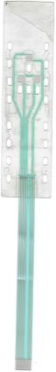
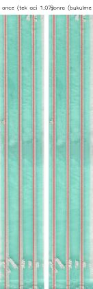
parts/p4.json 'bukulme' alanına yazıldı; prep.py her satırı bu kadar kaydırıp yerel eğimle döndürüyor (yatay kenarlar eksene dik kalıyor). Sonrasında 13 uzun hattın tamamı ≤ 2 px içinde düz (Kapı 2).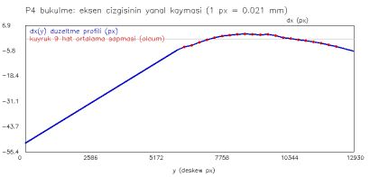
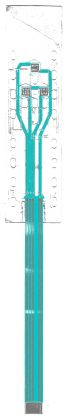
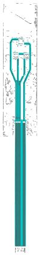
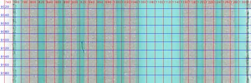
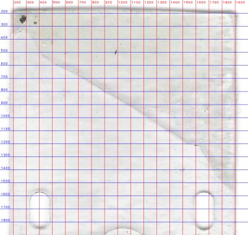
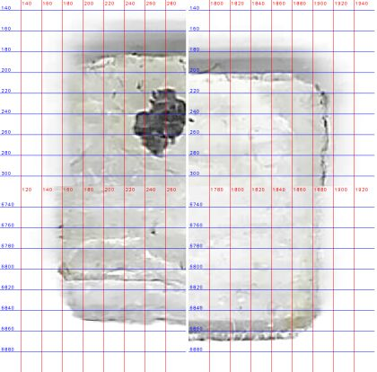
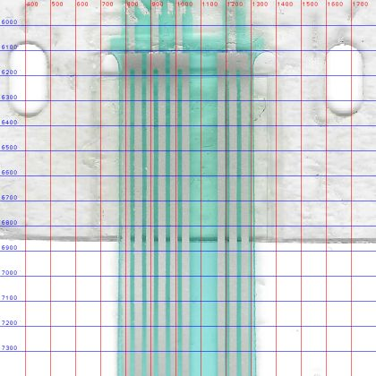
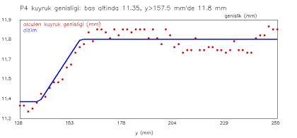
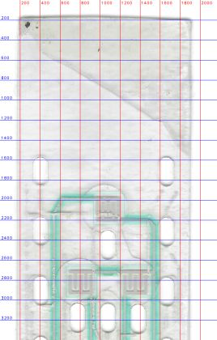
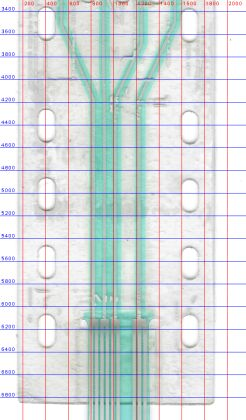
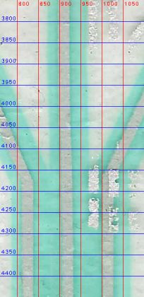
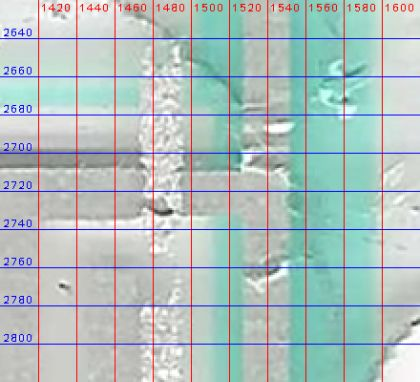
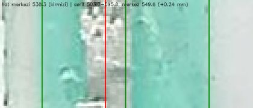
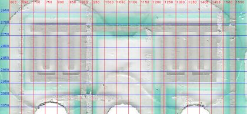
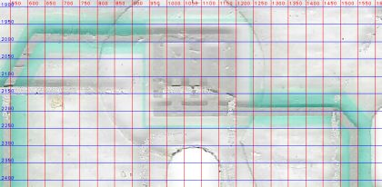
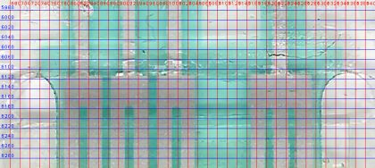
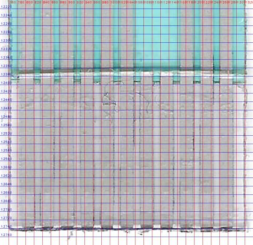
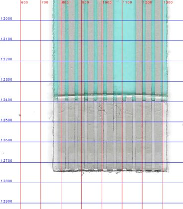
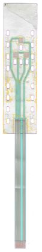
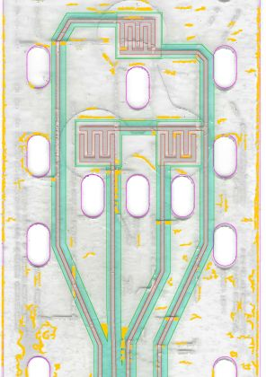
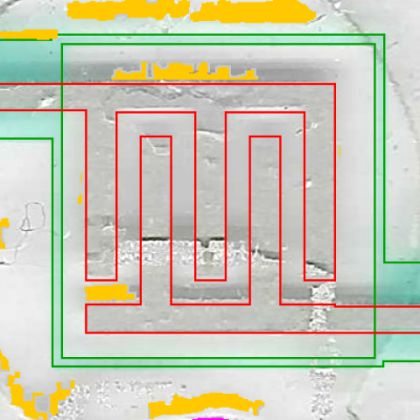
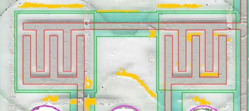
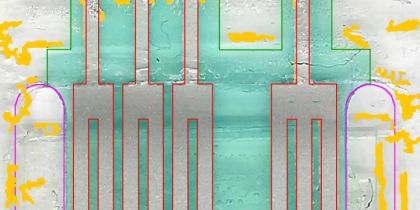
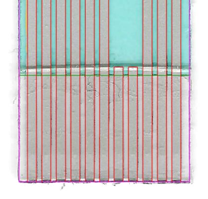
Bulgular
- Yapı: tek gümüş baskı + dielektrik (hat üstünde 2.0 mm şerit, ped çevresinde 0.2 mm çerçeve, kuyrukta tam kaplama) + arka takviye. P2 ile aynı tasarım ailesi.
- 4 elektriksel ağ: Net1 = A üst tarak (pin 1-2); Net2 = B alt tarak (3-4); Net3 = C alt tarak (5-6); Net4 (ortak) = A alt + B ve C üst tarakları (9-11). 7-8 dummy. Her pedin iki tarağı farklı ağda; kısa devre/kopukluk yok.
- Tuş grubu kart eksenine göre 0.85 mm sağda (x = 19.2 mm) — P2 ile birebir aynı.
- Film taramada düzlemde bükük: baş baskısı kuyruğa göre 0.445° dönük, kuyruk ±4 px (0.08 mm) yay. Bu bir tarama artefaktı (film camda düz yatmıyor), düzeltildi.
- Kesim deseni baskıya göre ~0.22° dönük (baş yan kenarları 6000 px'te 20 px kayıyor); ovaller ise baskıyla 0.1° içinde hizalı.
- Dielektrik baskısı gümüşe göre x +0.15…+0.24, y −0.09…−0.21 mm kayık (baskı registrasyonu). Bindirme her yanda ≥ 0.55 mm kaldığı için elektriksel risk yok.
- Kuyruk genişliği baş altında 11.35 mm, y≈158 mm'den sonra 11.8 mm. P2'de kuyruk 12.1 mm idi.
- Kuyruk hat adımı 47.31 px (1.003 mm) ve oval satır adımı 12.75 mm: P4 filmi P2'ye göre ~%0.3 büyük görünüyor (film genleşmesi veya tarayıcı yatağı farkı).
- Baş üst sağında çapraz kenarlı gri üçgen bölge ve pedler çevresinde daire/kanal biçimli izler var; baskı değil (spacer/yapışkan katmanı izi olabilir). P3'ün baş köşesindeki çapraz kesimle ilişkisi P3 analizinde kontrol edilecek.
Karar noktaları
Ölçümün tek başına yetmediği, yorum veya kullanıcı tercihi gerektiren noktalar. Katılmadığınız kararı numarasıyla bildirin.
- P3
- P4
- P3 ve P4
- Tek açı (1.07°), hataları kabul et
- Baş ve kuyruk için ayrı açı, birleşimde dikiş
- Satır bazlı bükülme düzeltmesi (eksen kayması profili)
- P4 kuyruk adımından 47.31 px/mm
- Setin ortak kalibrasyonu 47.17 px/mm
- Ölçüldüğü gibi (kaymalı) çiz
- İdeal (gümüşe merkezli) çiz, doğrulamada kaymayı telafi et
- Ölçüldüğü gibi (0.22° dönük)
- İdeal: baskıya hizalı ve simetrik
- Sabit 11.8 mm
- Ölçüldüğü gibi: 11.35 → 11.8 mm genişleme
- P2 değerleri (3.2 × 6.1, adım 12.7)
- Ölçülen (3.3 × 6.1, adım 12.75)
- Düz hat (x = 15.7)
- Ölçüldüğü gibi: y 79.45 → 87.9 arasında 15.6 → 15.8
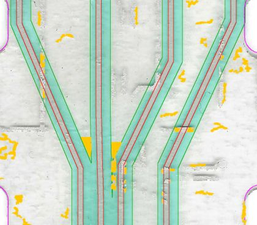
- R1.0 (P2 varsayımı)
- Ölçülen R0.3
- Çiz (ayrı katman)
- Çizme, rapora yaz
Ölçüler ve eleman sayıları
| Ölçü | Değer | Not |
|---|---|---|
| Baş (genişlik × yükseklik) | 36.7 × 141.5 mm | köşe R0.3 |
| Toplam boy | 266.25 mm | |
| Kuyruk genişliği | 11.35 → 11.8 mm | y=137.5–157.5 arasında genişler |
| Yarık | 2.0 mm | üst ucu y=125.65 |
| Konnektör | 11 poz × 1.0 mm | kontak 0.6 mm, 7-8 dummy |
| Hat genişliği (baş) | 0.5 mm | dielektrik şerit 2.0 mm |
| Tuş pedi | 5.0 × 5.0 mm | bar 0.55, parmak 0.6, boşluk 0.5, uç boşluğu 0.5 mm |
| Oval pencere | 3.3 × 6.1 mm | 20 adet, satır adımı 12.75 mm |
| Dielektrik bitişi / takviye | y=259.05 / y=258.25 mm | |
| Dielektrik baskı kayması (ölçülen) | x +0.15 / y -0.15 mm | çizimde ideal |
| Kart sınır kutusu | 36.70 × 266.25 mm | Kesim konturu |
| Kart alanı | 6599.8 mm² | |
| Gümüş alanı (alt baskı) | 983.7 mm² | |
| Dielektrik alanı | 2231.5 mm² |
Eleman sayıları
| Eleman | Adet |
|---|---|
| Hat (polyline) | 16 |
| Gümüş dikdörtgen (ped/blok/parmak) | 25 |
| Oval pencere | 20 |
| LED | 0 |
| Dielektrik yama | 0 |
| Köprü | 0 |
| Kontrol (belirsiz) rota | 0 |
Varsayımlar
- Ölçek setin ortak kalibrasyonu 47.17 px/mm (P1/P2 konnektör adımı 1.00 mm); P4 kuyruğunda adım 1.003 mm ölçüldü.
- Film taramada düzlemde bükük: baş baskısı kuyruğa göre 0.445° dönük, kuyruk ±4 px yay. Ön işlemede satır bazlı bükülme düzeltmesi uygulandı (parts/p4.json 'bukulme').
- Kesim deseni baskıya göre ~0.22° dönük ölçüldü; çizimde ideal hizalı ve simetrik alındı.
- Dielektrik baskısı gümüşe göre ~0.2 mm sağa, ~0.15 mm yukarı kayık; çizimde gümüşe merkezli alındı.
- Baş köşe yarıçapı R0.3 mm (taramada 0.2–0.4 mm).
- Tüm ovaller 3.3 × 6.1 mm (ölçülen genişlik 3.16–3.40, boy 5.8–6.4 mm).
- Ped çevresindeki ince turkuaz çerçeve dielektrik baskı kabul edildi.
- Yatay gümüş kenarların ~0.4 mm üstündeki koyu bantlar tarayıcı gölgesi sayıldı, çizilmedi.
Doğrulama (taramaya bindirme)
Kabul durumu: GEÇTİ · ROI y = [1850, 12340] px
| Metrik | Değer | Eşik | Sonuç |
|---|---|---|---|
| Gümüş kenar sapması medyan | 0.015 mm | ≤ 0.06 mm | ✔ geçti |
| Gümüş kenar sapması %90 | 0.042 mm | ≤ 0.15 mm | ✔ geçti |
| Gümüş kenar kapsaması | 0.962 | ≥ 0.8 | ✔ geçti |
| Dielektrik IoU | 0.979 | ≥ 0.95 | ✔ geçti |
| Dielektrik kenar sapması medyan | 0.022 mm | ≤ 0.06 mm | ✔ geçti |
| Dielektrik kenar sapması %90 | 0.081 mm | ≤ 0.15 mm | ✔ geçti |
| Ağ / tutarlılık HATA (bilinmeyen) | 0 | ≤ 0 | ✔ geçti |
| Gümüş sistematik ofset (her yan) / kayma | -0.009 mm / (-0.004, +0.021) mm | |ofset| uyarı > 0.03 | bilgi |
| Gümüş işaretli sapma medyanı | -0.011 mm | + geniş / − dar | bilgi |
| Gümüş yoğunluk kenarı (maskeden bağımsız) medyan / %90 | 0.014 / 0.038 mm | kapsama 0.99; ±6 px dışı sapma ölçülmez (kapı değil) | bilgi |
| Gümüş yoğunluk ofseti / kayma / bulanıklık σ | -0.008 mm / (-0.004, +0.024) mm / 0.036 mm | maske ofsetiyle farkı = maske yanlılığı | bilgi |
| Gümüş: tarama kenarlarının çizime ≤ 3 px oranı | 0.579 | bilgi (ters yön) | bilgi |
| Gümüş IoU | 0.744 | bilgi | bilgi |
| Taramada karşılıksız gümüş (ham / gölge hariç) | 0.185 / 0.173 | uyarı > 0.15 | bilgi |
| Dielektrik sistematik ofset (her yan) / kayma | -0.020 mm / (-0.017, -0.018) mm | |ofset| uyarı > 0.03 | bilgi |
| Dielektrik işaretli sapma medyanı | -0.014 mm | + geniş / − dar | bilgi |
| Dielektrik yoğunluk kenarı (maskeden bağımsız) medyan / %90 | 0.030 / 0.090 mm | kapsama 0.99; ±6 px dışı sapma ölçülmez (kapı değil) | bilgi |
| Dielektrik yoğunluk ofseti / kayma / bulanıklık σ | -0.011 mm / (-0.022, -0.037) mm / 0.042 mm | maske ofsetiyle farkı = maske yanlılığı | bilgi |
| Dielektrik: tarama kenarlarının çizime ≤ 3 px oranı | 0.841 | bilgi (ters yön) | bilgi |
| Dielektrik IoU | 0.979 | kapıda | bilgi |
| Gölge ofseti δ (genel) / kalkık karo | 0.36 mm / 7 | golge_haritasi.png | bilgi |
| Gümüş kenar (eski tam-piksel yöntem) medyan / %90 | 0.021 / 0.042 mm | önceki sürümle kıyas | bilgi |
| Dielektrik kenar (eski tam-piksel yöntem) medyan / %90 | 0.021 / 0.085 mm | önceki sürümle kıyas | bilgi |
En büyük sapmalı elemanlar
| Eleman | Tür | Medyan |sapma| mm | Ofset mm | Kayma (x, y) mm | Kapsama | Örnek |
|---|---|---|---|---|---|---|
| Blok_Net4 | dikdortgen | 0.155 | +0.000 | (+0.000, +0.000) | 0.03 | 77 |
| Blok_Net1 | dikdortgen | 0.067 | +0.028 | (-0.049, +0.000) | 0.17 | 58 |
| Ped_A | tus_ped | 0.058 | +0.048 | (-0.002, -0.057) | 0.33 | 845 |
| Ped_B | tus_ped | 0.049 | +0.050 | (+0.013, -0.062) | 0.48 | 857 |
| Blok_Net3 | dikdortgen | 0.040 | +0.000 | (+0.000, +0.000) | 0.05 | 58 |
| Blok_Net2 | dikdortgen | 0.017 | +0.000 | (+0.000, +0.000) | 0.05 | 58 |
| Ped_C | tus_ped | 0.046 | -0.025 | (+0.024, +0.029) | 0.53 | 776 |
| Kontak_01 | kontak | 0.025 | -0.040 | (+0.027, +0.000) | 1.00 | 4107 |
| Kontak_02 | kontak | 0.022 | -0.022 | (-0.002, +0.000) | 1.00 | 4108 |
| Hat_Net4_Ortak | hat | 0.021 | -0.005 | (-0.002, +0.043) | 0.98 | 2833 |
| Hat_Net2_B_alt | hat | 0.021 | -0.007 | (-0.006, +0.155) | 0.96 | 2104 |
| Kontak_03 | kontak | 0.018 | -0.016 | (+0.006, +0.000) | 1.00 | 4107 |
Düzeltme yönü: eleman ofset kadar daraltılır, kaymanın tersine taşınır. Tüm elemanlar: work/<ad>/eleman_sapma.json.
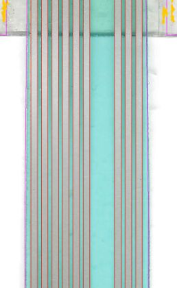
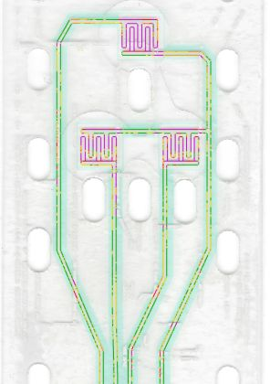
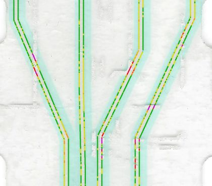
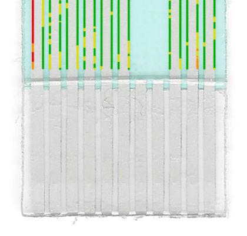
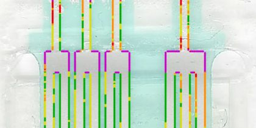
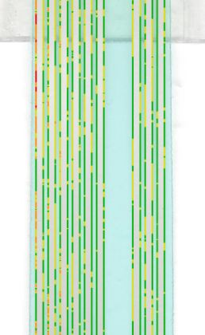
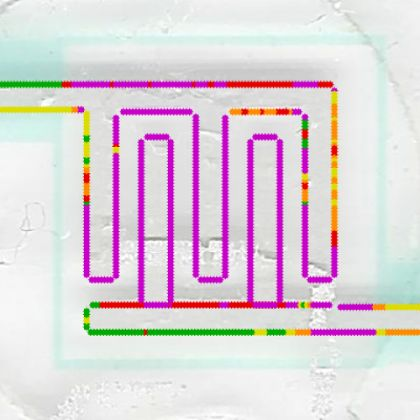
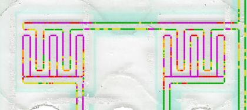
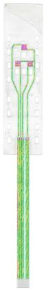
Ağ ve tasarım tutarlılığı
Çizim geometrisinden (taramadan bağımsız) çıkarılan elektrik ağları ve çizim kontrolleri. HATA 0, UYARI 1, bilgi 14, kullanıcı tarafından kabul edilmiş 0. Bilinmeyen HATA kabul kapısını düşürür; bilerek kabul edilenler parts/<ad>.json → kabul_edilen_bulgular ile işaretlenir.
| Seviye | Kontrol | Açıklama | Konum (mm) | Kimlik |
|---|---|---|---|---|
| UYARI | Taramada çizilmemiş gümüş | Taramadaki gümüşün %17'i (gölge hariç) çizimde karşılıksız (turuncu kümeleri inceleyin) | — | karsiliksiz_gumus:gumus |
Çizimden çıkarılan ağlar
| Ağ | Pinler | Uçlar (LED/ped) | Hat sayısı |
|---|---|---|---|
| 1 | 1, 2 | Ped_A.ust | 3 |
| 2 | 3, 4 | Ped_B.alt | 3 |
| 3 | 5, 6 | Ped_C.alt | 3 |
| 4 | 9, 10, 11 | Ped_A.alt, Ped_B.ust, Ped_C.ust | 6 |
| 5 | dummy 7 | — | 0 |
| 6 | dummy 8 | — | 0 |
Bu tablo RAPOR pin eşlemesiyle karşılaştırılmalıdır; fark varsa ya çizim ya da eşleme yanlıştır.
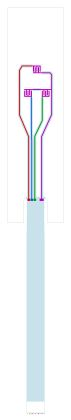
Önerilen düzeltmeler (ölçümden)
Yoğunluk kenarı ölçümünden (maskeden bağımsız) çıkarılan somut düzeltmeler; otomatik uygulanmaz. Tasarım niyetiyle (simetri, ortak adım) çelişen öneri varsa ölçüm analiz kaydına yazılır, niyet korunur. Şablon/tahmin elemanların (LED pedleri) önerileri kaplama altı belirsizliği taşır.
| Tür | Öneri |
|---|---|
| diel_kayma | Dielektrik, telafiden sonra hâlâ (-0.022, -0.037) mm kayık: SCAN['diel_kayma_mm'] [0.15, -0.15] -> [0.172, -0.113] (çizim ideal kalır, yalnız doğrulama telafisi). |
| hizalama | Gümüş çizimi genel olarak (-0.004, +0.024) mm kaymış. mm ile tanımlı (parametrik) elemanlar için SCAN px0 1040.0 -> 1040.2, py0 183.0 -> 181.8. Taramadan px ile okunan rotalar bu değişiklikten etkilenmez. |
| eleman | 'Hat_Net2_B_alt' (hat) taramaya göre (-0.008, +0.101) mm kaymış -> (+0.008, -0.101) mm taşı |
| eleman | 'Ped_A' (tus_ped) taramaya göre (+0.002, +0.048) mm kaymış -> (-0.002, -0.048) mm taşı |
| eleman | 'Hat_Net4_Ortak' (hat) taramaya göre (-0.005, +0.045) mm kaymış -> (+0.005, -0.045) mm taşı |
| eleman | 'Ped_B' (tus_ped) taramaya göre (+0.007, +0.041) mm kaymış -> (-0.007, -0.041) mm taşı |
Konnektör pin eşlemesi
| Pin | Bağlantı |
|---|---|
| 1-2 | Net1: A üst tarak (sol dış hat) |
| 3-4 | Net2: B alt tarak |
| 5-6 | Net3: C alt tarak |
| 7-8 | dummy |
| 9-11 | Net4 ortak: A alt + B/C üst tarak |
Fiziksel parçada kontrol edilecekler
İşaretledikleriniz bu tarayıcıda saklanır. Multimetre süreklilik testiyle doğrulayıp sonucu 'Pin 5 ↔ LED B1 üst ped: süreklilik VAR' biçiminde iletin.
Daha iyi sonuç için yapabilecekleriniz
Analiz görselleri
Analiz sırasında üretilen tüm görseller. Açıklamalı olanlar analiz kaydından, diğerleri dosya adından otomatik açıklanmıştır. Izgara etiketleri tarama pikseli (1 mm = 47.17 px).
Çıktılar ve CorelDRAW
| Dosya | Amaç |
|---|---|
output/P4_duzenlenebilir.svg | CorelDRAW'da düzenleme (hatlar kalınlıklı çizgi, pedler dikdörtgen) |
output/P4_uretim.svg | Üretim: her katman tek kapalı dolgu |
output/P4_uretim.pdf | Üretim: katmanlı vektör PDF |
output/P4_kontrol_taramali.svg | Kontrol: çizim + altta hizalı tarama |
Katmanlar: Takviye (arka yuz, ZIF), Gumus iletken, Dielektrik (yalitkan), Kesim (dis kontur + pencereler)
CorelDRAW'da kullanım
- Dosya > Aç (veya İçe Aktar) ile SVG'yi açın; ölçek 1:1 mm'dir, sayfa her yanda 5 mm boşlukludur.
- Katmanlar üst seviye gruplar olarak gelir (Nesne Yöneticisi). Düzenlemeden önce 'Kesim' ve 'Tarama' gruplarını kilitleyin.
- Düzenlenebilir sürümde hatlar kalınlıklı çizgidir: düğüm taşıyarak rota değiştirin, kalınlığı Kontur penceresinden değiştirin.
- Üretim için dolgu sürümünü (
_uretim.svg/.pdf) kullanın; her baskı katmanı ayrı film/elektir. - Kalıcı değişiklik istiyorsanız ölçüyü
parts/<ad>_design.pyiçinde değiştiripfpc.py all <ad>çalıştırın; böylece doğrulama ve rapor da güncellenir.
Ek: parametreler
| Alan | Değer |
|---|---|
| Kaynak | docs/K.pdf sayfa 1 |
| Kırpım (tarama px) | [6900, 780, 9070, 13710] |
| Eğiklik düzeltmesi | 1.07° |
| Ölçek | 47.17 px/mm |
| Parça tipi | tus |
| Tasarım dosyası | parts/p4_design.py |
| Yeniden üretim | python .devin/skills/fpc-vektor/scripts/fpc.py all p4 |